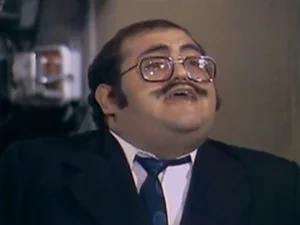

Senhor Barriga

Intérprete: Edgar Vivar
Dubladores: Mário Vilela (Chaves clássico), Ivo Roberto (BKS), César Leitão (Clube do Chaves), Fadu Costa e Gilberto Baroli (Gábia), Marcelo Torreão e Gustavo Berriel (desenho)
Nome completo: Zenon Barriga y Pesado
Caracterização: É um senhor gordo e careca. Usa óculos
Vestuário: Terno de duas peças e gravata
Personalidade: É um senhor risonho e bonachão, ao qual lhe faz perder a paciência com as crianças da vila e o Seu Madruga, com os muitos meses de aluguel que leva sem pagar. Apesar de constantemente irritado, tem um coração enorme (vai ver que foi isso que desceu para a barriga).
Zenon é um homem trabalhador e vive do aluguel de suas propriedades. Tem uma esposa de origem espanhola que viaja freqüentemente, também tem um filho, Nhonho, que é seu retrato vivo, seu grande orgulho e sua adoração. Poucos personagens da vila são tão “sacudidos” e golpeados pelas trapalhadas e a inocência do Chaves como é o Barriga do Sr. Caso… Perdão… o caso do Sr. Barriga, mas é sempre “sem querer querendo”.
Bordões: “Tinha que ser o Chaves de novo!”, “Pague o aluguel!”